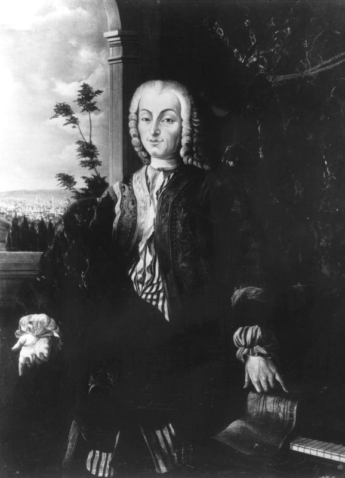
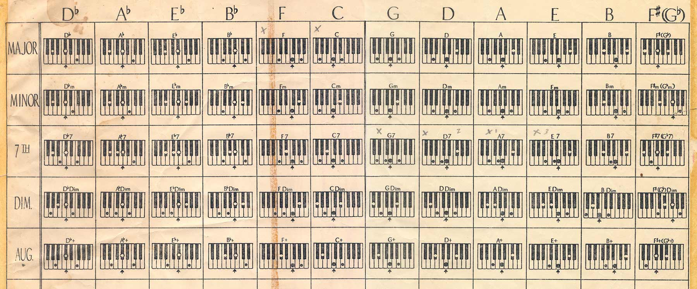
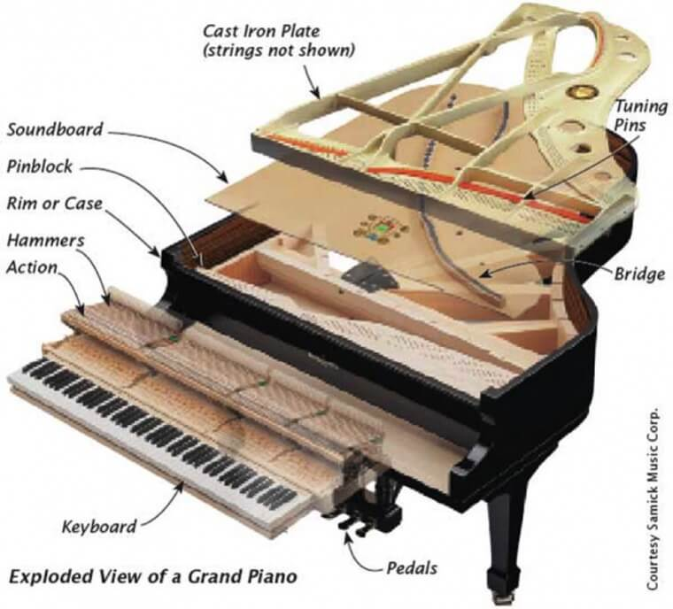

88 Keys by Lara and Libo-on

Welcome to 88 keys! This website is dedicated to providing an interactive experience for piano enthusiasts and learners alike. Explore the various pages to discover, features such as virtual piano keys, playable chords, and resources to enhance your musical journey. Whether you're a beginner or an experienced pianist, 88 Keys has something for everyone. Enjoy your time here and happy playing!
Navigate through the pages below to learn more about the history of the piano, its mechanisms, different chords, and even interact with a virtual piano!
HISTORY

Inventor of the Piano: Bartolomeo Cristofori

Music Sheet with Chords
CHORDS
MECHANISMS

Internal Mechanisms of a Piano
Play the Piano Page!
Try it!
Click the button below to sign up for the Piano Practice Plan! This plan is will be designed to your capabilities for you to improve your piano skills! By answering this form, you will be granted access to 2 new pages. One will contain the practice plan designed just for you, and the second page show supplementary resources and references that you may watch in order for you to improve! In the second page, a list of recommended songs will also appear for you to learn, if you wish to do so. We wish you luck on your piano journey!